设计模式
资料来源于NJU研究生课程《高级软件设计》
设计模式指的是在软件工程中，针对特定问题的典型解决方案的一种标准化描述。
通常可分为三大类（Design Pattern Catalog）： - 创建型模式：与对象创建有关：单例、工厂、抽象工厂等 - 结构型模式：将类或对象按某种布局组成更大的结构：装饰、适配器、外观、组合、代理等 - 行为型模式：类或对象之间怎样相互协作共同完成单个对象无法单独完成的任务，以及怎样分配职责：策略、状态、观察者、迭代器、模板、命令等
本文给出以上14个常用设计模式的cpp实现示例。
设计原则
单一职责原则（SRP，Single Responsibility Principle）：一个类只负责一项职责
开闭原则（OCP，Open-Closed Principle）：软件实体应对扩展开放，对修改关闭
里氏替换原则（LSP，Liskov Substitution Principle）：子类对象必须能够替换掉所有父类对象
依赖倒置原则（DIP，Dependency Inversion Principle）：高层模块不应该依赖低层模块，二者都应该依赖于抽象；针对接口编程，不针对实现编程
接口隔离原则（ISP，Interface Segregation Principle）：使用多个专门的接口，而不使用单一的总接口
合成复用原则（CAR，Composite Reuse Principle）：尽量使用对象组合/聚合，而不是继承来达到复用的目的
迪米特法则（LoD，Law of Demeter）：一个对象应当对其他对象有尽可能少的了解，即只与直接的朋友通信。也叫“最少知识原则”
好莱坞原则（Hollywood Principle）：低层组件不应该调用高层组件，而应该让高层组件来控制何时调用低层组件：“不要调用我们，我们会调用你”（Don’t call us, we will call you）
创建型模式
单例模式
Insight：本身是用来保证一个类只有一个实例，难点在于具体场景中如何对需求进行抽象，知道哪些类需要单例。
C++中可以使用static 局部变量直接实现线程安全的懒汉式单例模式： 1 2 3 4 5 6 7 8 9 10 11 12 13 14 15 16 17 18 19 20 class Singleton { public : static Singleton& getInstance () { static Singleton instance; return instance; } Singleton (const Singleton&) = delete ; Singleton& operator =(const Singleton&) = delete ; Singleton (Singleton&&) = delete ; Singleton& operator =(Singleton&&) = delete ; private : Singleton () = default ; };
当然为了对比，接下来给出一些更传统使用 new 创建的单例模式实现。
懒汉式——线程不安全： 1 2 3 4 5 6 7 8 9 10 11 12 13 14 15 16 17 18 19 20 21 class LazyUnsafeSingleton {public : static LazyUnsafeSingleton* getInstance () if (!instance) { instance = new LazyUnsafeSingleton (); } return instance; } LazyUnsafeSingleton (const LazyUnsafeSingleton&) = delete ; LazyUnsafeSingleton& operator =(const LazyUnsafeSingleton&) = delete ; LazyUnsafeSingleton (LazyUnsafeSingleton&&) = delete ; LazyUnsafeSingleton& operator =(LazyUnsafeSingleton&&) = delete ; private : LazyUnsafeSingleton () = default ; static LazyUnsafeSingleton* instance; }; LazyUnsafeSingleton* LazyUnsafeSingleton::instance = nullptr ;
饿汉式 - 线程安全 （静态对象在程序启动期构造） 1 2 3 4 5 6 7 8 9 10 11 12 13 14 15 16 17 class EagerSingleton {public : static EagerSingleton& getInstance () return instance; } EagerSingleton (const EagerSingleton&) = delete ; EagerSingleton& operator =(const EagerSingleton&) = delete ; EagerSingleton (EagerSingleton&&) = delete ; EagerSingleton& operator =(EagerSingleton&&) = delete ; private : EagerSingleton () = default ; static EagerSingleton instance; }; EagerSingleton EagerSingleton::instance;
懒汉式 - 线程安全 （使用互斥锁） 1 2 3 4 5 6 7 8 9 10 11 12 13 14 15 16 17 18 19 20 21 22 23 class LazySafeSingleton {public : static LazySafeSingleton* getInstance () std::lock_guard<std::mutex> lock (mtx) ; if (!instance) { instance = new LazySafeSingleton (); } return instance; } LazySafeSingleton (const LazySafeSingleton&) = delete ; LazySafeSingleton& operator =(const LazySafeSingleton&) = delete ; LazySafeSingleton (LazySafeSingleton&&) = delete ; LazySafeSingleton& operator =(LazySafeSingleton&&) = delete ; private : LazySafeSingleton () = default ; static LazySafeSingleton* instance; static std::mutex mtx; }; LazySafeSingleton* LazySafeSingleton::instance = nullptr ; std::mutex LazySafeSingleton::mtx;
双重检查锁 - 线程安全 （减少加锁开销，互斥锁只包裹创建过程） 1 2 3 4 5 6 7 8 9 10 11 12 13 14 15 16 17 18 19 20 21 22 23 24 25 26 27 28 29 30 class DCLSingleton {public : static DCLSingleton* getInstance () DCLSingleton* p = instance.load (std::memory_order_acquire); if (!p) { std::lock_guard<std::mutex> lock (mtx) ; p = instance.load (std::memory_order_relaxed); if (!p) { p = new DCLSingleton (); instance.store (p, std::memory_order_release); } } return p; } DCLSingleton (const DCLSingleton&) = delete ; DCLSingleton& operator =(const DCLSingleton&) = delete ; DCLSingleton (DCLSingleton&&) = delete ; DCLSingleton& operator =(DCLSingleton&&) = delete ; private : DCLSingleton () = default ; static std::atomic<DCLSingleton*> instance; static std::mutex mtx; }; std::atomic<DCLSingleton*> DCLSingleton::instance{nullptr }; std::mutex DCLSingleton::mtx;
单例模式类图没有什么特别意义。
符合的设计原则：无
工厂模式
Insight：工厂模式的核心思想是将对象的创建过程封装在一个工厂类中，从而使得客户端代码与具体的对象创建逻辑解耦。这样可以更容易地管理和扩展对象的创建过程。
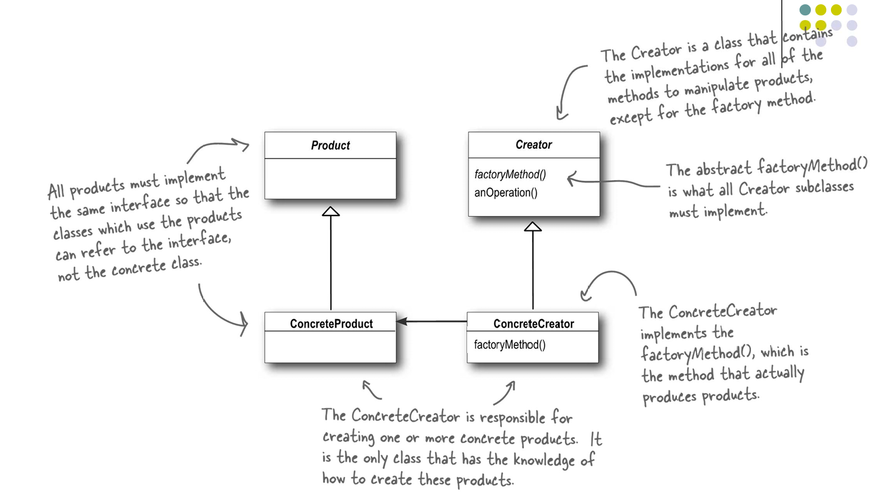
alt text
相比于简单工厂，工厂方法模式通过引入抽象工厂接口和具体工厂类，使得系统更具扩展性和灵活性。客户端代码只需要依赖于抽象工厂接口，而不需要关心具体的工厂实现，从而实现了依赖倒置原则。
1 2 3 4 5 6 7 8 9 10 11 12 13 14 15 16 17 18 19 20 21 22 23 24 25 26 27 28 29 30 31 32 33 34 35 36 37 38 39 40 41 42 43 44 45 46 47 48 49 50 51 52 53 54 55 56 57 58 59 60 61 62 63 64 65 66 67 68 69 70 71 72 73 74 75 76 77 78 79 80 81 82 83 84 85 86 87 88 89 90 91 92 93 94 95 96 97 98 99 100 101 102 103 104 105 106 107 108 109 110 111 112 113 114 115 116 117 118 119 #include <iostream> #include <memory> #include <vector> class Pizza { public : void prepare () { std::cout << "Preparing " << name << std::endl; std::cout << "Tossing dough: " << dough << std::endl; std::cout << "Adding sauce: " << sauce << std::endl; std::cout << "Adding toppings: " ; for (const auto & topping : toppings) { std::cout << topping << " " ; } std::cout << std::endl; } protected : std::string name; std::string dough; std::string sauce; std::vector<std::string> toppings; }; class NYStyleCheesePizza : public Pizza{ public : NYStyleCheesePizza () { name = "NY Style Cheese Pizza" ; dough = "Thin Crust Dough" ; sauce = "Marinara Sauce" ; toppings.push_back ("Grated Reggiano Cheese" ); } }; class ChicagoStyleCheesePizza : public Pizza{ public : ChicagoStyleCheesePizza () { name = "Chicago Style Cheese Pizza" ; dough = "Extra Thick Crust Dough" ; sauce = "Plum Tomato Sauce" ; toppings.push_back ("Shredded Mozzarella Cheese" ); } }; class PizzaStore { public : virtual std::unique_ptr<Pizza> CreatePizza (const std::string& type) 0 ; std::unique_ptr<Pizza> OrderPizza (const std::string& type) { auto pizza = CreatePizza (type); if (pizza) { pizza->prepare (); } return pizza; } }; class NYPizzaStore : public PizzaStore{ public : std::unique_ptr<Pizza> CreatePizza (const std::string& type) override { if (type == "cheese" ) { return std::make_unique <NYStyleCheesePizza>(); } else { return nullptr ; } } }; class ChicagoPizzaStore : public PizzaStore{ public : std::unique_ptr<Pizza> CreatePizza (const std::string& type) override { if (type == "cheese" ) { return std::make_unique <ChicagoStyleCheesePizza>(); } else { return nullptr ; } } }; int main () PizzaStore* nyStore = new NYPizzaStore (); PizzaStore* chicagoStore = new ChicagoPizzaStore (); auto pizza1 = nyStore->OrderPizza ("cheese" ); std::cout << std::endl; auto pizza2 = chicagoStore->OrderPizza ("cheese" ); delete nyStore; delete chicagoStore; return 0 ; }
输出： 1 2 3 4 5 6 7 8 9 Preparing NY Style Cheese Pizza Tossing dough: Thin Crust Dough Adding sauce: Marinara Sauce Adding toppings: Grated Reggiano Cheese Preparing Chicago Style Cheese Pizza Tossing dough: Extra Thick Crust Dough Adding sauce: Plum Tomato Sauce Adding toppings: Shredded Mozzarella Cheese
符合的设计原则：依赖倒置原则、开闭原则。
抽象工厂模式
Insight：抽象工厂模式的核心思想是提供一个接口，用于创建一系列相关或相互依赖的对象，而无需指定它们的具体类。这样可以确保客户端代码与具体的对象创建逻辑解耦，从而提高系统的灵活性和可扩展性。
工厂方法模式只考虑深处同等级的产品，但是在显示生活中许多工厂是综合型的工厂，能生产多等级（种类）的产品，如农场里既养动物又种植物，电器厂既生产电视机又生产洗衣机或空调，大学既有软件专业又有生物专业等。
因此简单理解，抽象工厂模式就是能够生产多个不同等级的产品。
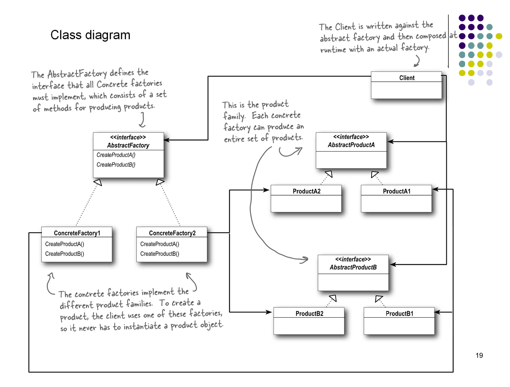
alt text
1 2 3 4 5 6 7 8 9 10 11 12 13 14 15 16 17 18 19 20 21 22 23 24 25 26 27 28 29 30 31 32 33 34 35 36 37 38 39 40 41 42 43 44 45 46 47 48 49 50 51 52 53 54 55 56 57 58 59 60 61 62 63 64 65 66 67 68 69 70 71 72 73 74 75 76 77 78 79 80 81 82 83 84 85 86 87 88 89 90 91 92 93 94 95 96 97 98 99 100 101 102 103 104 105 106 107 108 109 110 111 112 113 114 115 116 117 118 119 120 121 122 123 124 125 126 127 128 129 130 131 132 133 134 135 136 137 138 139 140 141 142 143 144 145 146 147 148 149 150 151 152 #include <iostream> #include <memory> #include <vector> class Dough { public : virtual std::string toString () const 0 ; virtual ~Dough () = default ; }; class ThinCrustDough : public Dough{ public : std::string toString () const override { return "Thin Crust Dough" ; } }; class ThickCrustDough : public Dough{ public : std::string toString () const override { return "Thick Crust Dough" ; } }; class Sauce { public : virtual std::string toString () const 0 ; virtual ~Sauce () = default ; }; class MarinaraSauce : public Sauce{ public : std::string toString () const override { return "Marinara Sauce" ; } }; class PlumTomatoSauce : public Sauce{ public : std::string toString () const override { return "Plum Tomato Sauce" ; } }; class Cheese { public : virtual std::string toString () const 0 ; virtual ~Cheese () = default ; }; class ReggianoCheese : public Cheese{ public : std::string toString () const override { return "Reggiano Cheese" ; } }; class MozzarellaCheese : public Cheese{ public : std::string toString () const override { return "Mozzarella Cheese" ; } }; class PizzaIngredientFactory { public : virtual std::unique_ptr<Dough> CreateDough () 0 ; virtual std::unique_ptr<Sauce> CreateSauce () 0 ; virtual std::unique_ptr<Cheese> CreateCheese () 0 ; virtual ~PizzaIngredientFactory () = default ; }; class NYPizzaIngredientFactory : public PizzaIngredientFactory{ public : std::unique_ptr<Dough> CreateDough () override { return std::make_unique <ThinCrustDough>(); } std::unique_ptr<Sauce> CreateSauce () override { return std::make_unique <MarinaraSauce>(); } std::unique_ptr<Cheese> CreateCheese () override { return std::make_unique <ReggianoCheese>(); } }; class ChicagoPizzaIngredientFactory : public PizzaIngredientFactory{ public : std::unique_ptr<Dough> CreateDough () override { return std::make_unique <ThickCrustDough>(); } std::unique_ptr<Sauce> CreateSauce () override { return std::make_unique <PlumTomatoSauce>(); } std::unique_ptr<Cheese> CreateCheese () override { return std::make_unique <MozzarellaCheese>(); } }; int main () NYPizzaIngredientFactory nyFactory; auto nyDough = nyFactory.CreateDough (); auto nySauce = nyFactory.CreateSauce (); auto nyCheese = nyFactory.CreateCheese (); std::cout << "NY Pizza Ingredients: " << nyDough->toString () << ", " << nySauce->toString () << ", " << nyCheese->toString () << std::endl; ChicagoPizzaIngredientFactory chicagoFactory; auto chicagoDough = chicagoFactory.CreateDough (); auto chicagoSauce = chicagoFactory.CreateSauce (); auto chicagoCheese = chicagoFactory.CreateCheese (); std::cout << "Chicago Pizza Ingredients: " << chicagoDough->toString () << ", " << chicagoSauce->toString () << ", " << chicagoCheese->toString () << std::endl; return 0 ; }
输出： 1 2 NY Pizza Ingredients: Thin Crust Dough, Marinara Sauce, Reggiano Cheese Chicago Pizza Ingredients: Thick Crust Dough, Plum Tomato Sauce, Mozzarella Cheese
符合的设计原则：依赖倒置原则、开闭原则。
结构型模式
装饰器模式
Insight：装饰器模式的核心思想是通过将对象包装在另一个对象中来动态地添加行为或职责，而无需修改原始对象的代码。这样可以实现对对象功能的灵活扩展，同时遵循开闭原则。
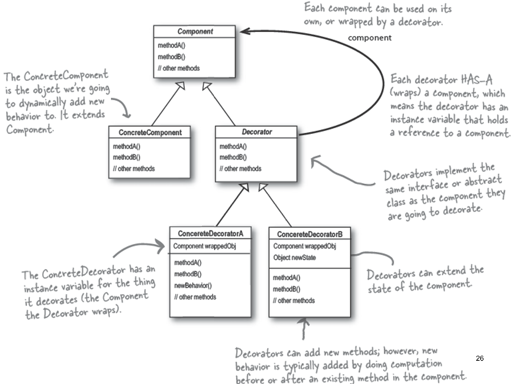
alt text
Decorator 相比于 ConcreteComponent 多了一个对 Component 的引用，从而可以在保持原有接口的基础上，动态地添加新的行为。
1 2 3 4 5 6 7 8 9 10 11 12 13 14 15 16 17 18 19 20 21 22 23 24 25 26 27 28 29 30 31 32 33 34 35 36 37 38 39 40 41 42 43 44 45 46 47 48 49 50 51 52 53 54 55 56 57 58 59 60 61 62 63 64 65 66 67 68 69 70 71 72 73 74 75 76 77 78 79 80 81 82 83 84 85 86 87 88 89 90 91 92 93 94 95 96 97 98 99 100 101 102 #include <iostream> #include <memory> #include <vector> #include <string> class Beverage { public : virtual std::string getDescription () const { return description; } virtual double cost () const 0 ; virtual ~Beverage () = default ; protected : std::string description; }; class HouseBlend : public Beverage{ public : HouseBlend () { description = "House Blend Coffee" ; } virtual double cost () const override { return 0.89 ; } }; class DarkRoast : public Beverage{ public : DarkRoast () { description = "Dark Roast Coffee" ; } virtual double cost () const override { return 0.99 ; } }; class CondimentDecorator : public Beverage{ public : explicit CondimentDecorator (Beverage* bev) : beverage(bev) { description = beverage->getDescription () + ", Condiment" ; } virtual ~CondimentDecorator () = default ; protected : Beverage* beverage; }; class Mocha : public CondimentDecorator{ public : explicit Mocha (Beverage* bev) : CondimentDecorator(bev) { description = beverage->getDescription () + ", Mocha" ; } virtual double cost () const override { return 0.20 + beverage->cost (); } }; class Milk : public CondimentDecorator{ public : explicit Milk (Beverage* bev) : CondimentDecorator(bev) { description = beverage->getDescription () + ", Milk" ; } virtual double cost () const override { return 0.10 + beverage->cost (); } }; int main () Beverage* beverage1 = new HouseBlend (); beverage1 = new Mocha (beverage1); beverage1 = new Milk (beverage1); std::cout << beverage1->getDescription () << " $" << beverage1->cost () << std::endl; delete beverage1; Beverage* beverage2 = new DarkRoast (); beverage2 = new Mocha (beverage2); beverage2 = new Mocha (beverage2); std::cout << beverage2->getDescription () << " $" << beverage2->cost () << std::endl; delete beverage2; return 0 ; }
输出： 1 2 House Blend Coffee, Mocha, Milk $1.19 Dark Roast Coffee, Mocha, Mocha $1.39
符合的设计原则：里氏替换原则、开闭原则、合成复用原则。
适配器模式
Insight：适配器模式的核心思想是通过创建一个适配器类，将一个类的接口转换成客户端所期望的另一个接口，从而使得原本由于接口不兼容而无法一起工作的类能够协同工作。这样可以实现代码的复用和系统的灵活性。
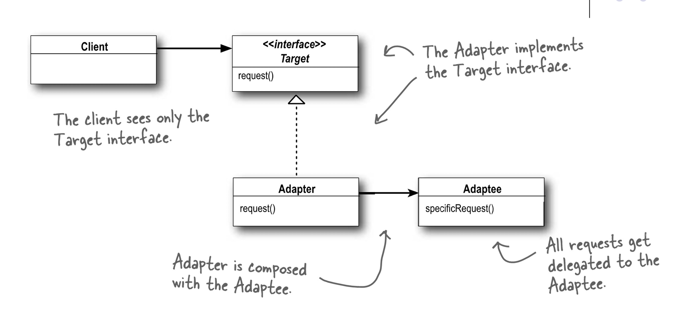
alt text
适配器相比于继承的原有类(Target)，多了一个对被适配类(Adaptee)的引用。
可以拓展为双向适配器，通过多重继承同时实现两个接口，从而使得两个不兼容的类能够相互适配。
1 2 3 4 5 6 7 8 9 10 11 12 13 14 15 16 17 18 19 20 21 22 23 24 25 26 27 28 29 30 31 32 33 34 35 36 37 38 39 40 41 42 43 44 45 46 47 48 49 50 51 52 53 54 55 56 57 58 59 60 61 62 63 64 65 66 67 68 69 70 71 72 73 74 75 76 77 78 79 80 81 82 83 84 85 86 87 88 89 90 91 92 93 94 95 96 97 98 99 100 101 102 103 104 105 106 107 108 109 110 111 112 113 114 115 116 117 118 119 120 121 #include <iostream> class Duck { public : virtual void Quack () 0 ; virtual void Fly () 0 ; virtual ~Duck () = default ; }; class MallardDuck : public Duck{ public : void Quack () override { std::cout << "Quack!" << std::endl; } void Fly () override { std::cout << "I'm flying!" << std::endl; } }; class Turkey { public : virtual void Gobble () 0 ; virtual void FlyShortDistance () 0 ; virtual ~Turkey () = default ; }; class WildTurkey : public Turkey{ public : void Gobble () override { std::cout << "Gobble gobble!" << std::endl; } void FlyShortDistance () override { std::cout << "I'm flying a short distance!" << std::endl; } }; class TurkeyAdapter : public Duck{ public : explicit TurkeyAdapter (Turkey* turkey) : turkey(turkey) { void Quack () override { turkey->Gobble (); } void Fly () override { for (int i = 0 ; i < 5 ; ++i) { turkey->FlyShortDistance (); } } private : Turkey* turkey; }; class TwoWayAdapter : public Duck, public Turkey{ public : TwoWayAdapter (Duck* duck, Turkey* turkey) : duck (duck), turkey (turkey) {} void Quack () override { turkey->Gobble (); } void Fly () override { for (int i = 0 ; i < 5 ; ++i) { turkey->FlyShortDistance (); } } void Gobble () override { duck->Quack (); } void FlyShortDistance () override { duck->Fly (); } private : Duck* duck; Turkey* turkey; }; int main () MallardDuck duck; WildTurkey turkey; TurkeyAdapter turkeyAdapter (&turkey) ; std::cout << "The TurkeyAdapter says..." << std::endl; turkeyAdapter.Quack (); turkeyAdapter.Fly (); TwoWayAdapter twoWayAdapter (&duck, &turkey) ; std::cout << "The TwoWayAdapter as a Duck says..." << std::endl; twoWayAdapter.Quack (); twoWayAdapter.Fly (); std::cout << "The TwoWayAdapter as a Turkey says..." << std::endl; twoWayAdapter.Gobble (); twoWayAdapter.FlyShortDistance (); return 0 ; }
输出： 1 2 3 4 5 6 7 8 9 10 11 12 13 14 15 16 17 The TurkeyAdapter says... Gobble gobble! I'm flying a short distance! I'm flying a short distance! I'm flying a short distance! I'm flying a short distance! I'm flying a short distance! The TwoWayAdapter as a Duck says... Gobble gobble! I'm flying a short distance! I'm flying a short distance! I'm flying a short distance! I'm flying a short distance! I'm flying a short distance! The TwoWayAdapter as a Turkey says... Quack! I'm flying!
符合的设计原则：合成复用原则、里氏替换原则。
外观模式
Insight：外观模式的核心思想是通过提供一个统一的接口，简化复杂子系统的使用，从而使得客户端代码与子系统解耦。这样可以提高系统的易用性和可维护性。
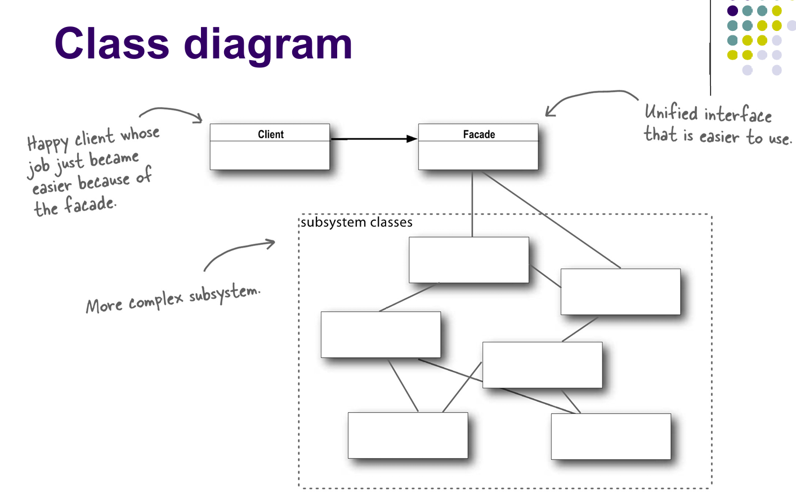
alt text
1 2 3 4 5 6 7 8 9 10 11 12 13 14 15 16 17 18 19 20 21 22 23 24 25 26 27 28 29 30 31 32 33 34 35 36 37 38 39 40 41 42 43 44 45 46 47 48 49 50 51 52 53 54 55 56 57 58 59 60 61 62 63 64 65 66 67 68 69 70 71 72 73 74 75 76 77 78 79 80 81 82 83 84 85 86 87 88 89 90 91 92 93 94 95 96 97 98 99 100 101 102 103 104 105 106 107 108 109 110 111 112 113 114 115 116 117 118 119 120 121 #include <iostream> #include <memory> class PopcornPopper { public : void on () { std::cout << "Popcorn Popper ON" << std::endl; } void off () { std::cout << "Popcorn Popper OFF" << std::endl; } void pop () { std::cout << "Popping popcorn!" << std::endl; } }; class TheaterLights { public : void dim (int level) { std::cout << "Theater Lights dimming to " << level << "%" << std::endl; } void on () { std::cout << "Theater Lights ON" << std::endl; } }; class Projector { public : void on () { std::cout << "Projector ON" << std::endl; } void off () { std::cout << "Projector OFF" << std::endl; } void wideScreenMode () { std::cout << "Projector in widescreen mode (16x9 aspect ratio)" << std::endl; } }; class SoundSystem { public : void on () { std::cout << "Sound System ON" << std::endl; } void off () { std::cout << "Sound System OFF" << std::endl; } void setVolume (int level) { std::cout << "Sound System volume set to " << level << std::endl; } }; class HomeTheaterFacade { public : HomeTheaterFacade () { popcornPopper = new PopcornPopper (); theaterLights = new TheaterLights (); projector = new Projector (); soundSystem = new SoundSystem (); } void watchMovie (const std::string& movie) { std::cout << "Get ready to watch a movie..." << std::endl; popcornPopper->on (); popcornPopper->pop (); theaterLights->dim (10 ); projector->on (); projector->wideScreenMode (); soundSystem->on (); soundSystem->setVolume (5 ); std::cout << "Now playing: " << movie << std::endl; } ~HomeTheaterFacade () { delete popcornPopper; delete theaterLights; delete projector; delete soundSystem; } private : PopcornPopper* popcornPopper; TheaterLights* theaterLights; Projector* projector; SoundSystem* soundSystem; }; int main () HomeTheaterFacade homeTheater; homeTheater.watchMovie ("Fuck NUAA" ); return 0 ; }
输出： 1 2 3 4 5 6 7 8 9 Get ready to watch a movie... Popcorn Popper ON Popping popcorn! Theater Lights dimming to 10% Projector ON Projector in widescreen mode (16x9 aspect ratio) Sound System ON Sound System volume set to 5 Now playing: Fuck NUAA
符合的设计原则：迪米特法则
组合模式
Insight：将对象组合成树形结构，用于表示“整体——部分”关系。用户可用相同方式处理单独和组合对象。
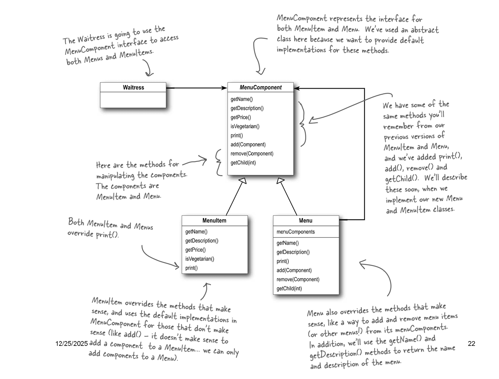
composite
可以同样使用基于组合模式的组合迭代器来对整个树形结构进行遍历。
1 2 3 4 5 6 7 8 9 10 11 12 13 14 15 16 17 18 19 20 21 22 23 24 25 26 27 28 29 30 31 32 33 34 35 36 37 38 39 40 41 42 43 44 45 46 47 48 49 50 51 52 53 54 55 56 57 58 59 60 61 62 63 64 65 66 67 68 69 70 71 72 73 74 75 76 77 78 79 80 81 82 83 84 85 86 87 88 89 90 91 92 93 94 95 96 97 98 99 100 101 102 103 104 105 106 107 108 109 110 111 112 113 114 115 116 117 118 119 120 121 122 123 124 125 126 127 128 129 130 131 132 133 134 135 136 137 138 139 140 141 142 143 144 145 146 147 148 149 150 151 152 153 154 155 156 157 158 159 160 161 162 163 164 165 166 167 168 169 170 171 172 173 174 175 176 177 178 179 180 181 182 183 184 185 186 187 188 189 190 191 192 193 194 195 196 197 198 199 200 201 202 203 204 205 206 207 208 209 210 211 212 213 214 215 216 217 218 219 220 221 222 223 224 225 226 227 228 229 230 231 232 233 234 235 236 237 238 239 240 241 242 243 244 245 246 247 248 249 250 251 252 253 254 255 256 257 258 259 260 261 262 263 264 265 266 267 268 269 270 271 272 273 #include <iostream> #include <memory> #include <string> #include <vector> #include <stack> #include <algorithm> class MenuComponent { public : virtual void Add (std::shared_ptr<MenuComponent> component) { throw std::runtime_error ("Unsupported Operation" ); } virtual void Remove (std::shared_ptr<MenuComponent> component) { throw std::runtime_error ("Unsupported Operation" ); } virtual std::shared_ptr<MenuComponent> GetChild (int index) { throw std::runtime_error ("Unsupported Operation" ); } virtual std::string GetName () const { throw std::runtime_error ("Unsupported Operation" ); } virtual std::string GetDescription () const { throw std::runtime_error ("Unsupported Operation" ); } virtual double GetPrice () const { throw std::runtime_error ("Unsupported Operation" ); } virtual bool IsVegetarian () const { throw std::runtime_error ("Unsupported Operation" ); } virtual ~MenuComponent () = default ; virtual void Print () const 0 ; }; class MenuItem : public MenuComponent{ public : MenuItem (const std::string& name, const std::string& description, double price, bool vegetarian) : name (name), description (description), price (price), vegetarian (vegetarian) {} std::string GetName () const override { return name; } std::string GetDescription () const override { return description; } double GetPrice () const override { return price; } bool IsVegetarian () const override { return vegetarian; } void Print () const override { std::cout << " " << GetName (); if (IsVegetarian ()) { std::cout << " (v)" ; } std::cout << ", " << GetPrice () << std::endl; std::cout << " -- " << GetDescription () << std::endl; } protected : std::string name; std::string description; double price; bool vegetarian; }; class Iterator { public : virtual bool HasNext () 0 ; virtual MenuComponent* Next () 0 ; virtual ~Iterator () = default ; }; class SimpleIterator : public Iterator{ public : explicit SimpleIterator (const std::vector<std::shared_ptr<MenuComponent>>& components) : components(components) { } bool HasNext () override { return position < components.size (); } MenuComponent* Next () override { if (!HasNext ()) { return nullptr ; } return components[position++].get (); } protected : int position{0 }; const std::vector<std::shared_ptr<MenuComponent>>& components; }; class CompositeIterator : public Iterator{ public : bool HasNext () override { if (stack.empty ()) return false ; Iterator* iterator = stack.top (); if (!iterator->HasNext ()) { stack.pop (); return HasNext (); } return true ; } MenuComponent* Next () override ; std::stack<Iterator*> stack; }; class Menu : public MenuComponent{ public : Menu (const std::string& name, const std::string& description) : name (name), description (description) {} void Add (std::shared_ptr<MenuComponent> component) override { menuComponents.push_back (component); } void Remove (std::shared_ptr<MenuComponent> component) override { auto it = std::find (menuComponents.begin (), menuComponents.end (), component); if (it != menuComponents.end ()) { menuComponents.erase (it); } } std::shared_ptr<MenuComponent> GetChild (int index) override { if (index < 0 || index >= static_cast <int >(menuComponents.size ())) { throw std::out_of_range ("Index out of range" ); } return menuComponents[index]; } std::string GetName () const override { return name; } std::string GetDescription () const override { return description; } void Print () const override { std::cout << std::endl << GetName (); std::cout << ", " << GetDescription () << std::endl; std::cout << "---------------------" << std::endl; for (const auto & component : menuComponents) { component->Print (); } } Iterator* CreateIterator () { SimpleIterator* simpleIterator = new SimpleIterator (menuComponents); CompositeIterator* compositeIterator = new CompositeIterator (); compositeIterator->stack.push (simpleIterator); return compositeIterator; } protected : std::vector<std::shared_ptr<MenuComponent>> menuComponents; std::string name; std::string description; }; MenuComponent* CompositeIterator::Next () if (!HasNext ()) return nullptr ; Iterator* iterator = stack.top (); MenuComponent* component = iterator->Next (); Menu* menu = dynamic_cast <Menu*>(component); if (menu) { stack.push (menu->CreateIterator ()); } return component; } int main () auto pancakeHouseMenu = std::make_shared <Menu>("PANCAKE HOUSE MENU" , "Breakfast" ); auto dinerMenu = std::make_shared <Menu>("DINER MENU" , "Lunch" ); auto nuaaMenu = std::make_shared <Menu>("NUAA MENU" , "Shit" ); auto dessertMenu = std::make_shared <Menu>("DESSERT MENU" , "Dessert of course!" ); auto allMenus = std::make_shared <Menu>("ALL MENUS" , "All menus combined" ); allMenus->Add (pancakeHouseMenu); allMenus->Add (dinerMenu); allMenus->Add (nuaaMenu); pancakeHouseMenu->Add (std::make_shared <MenuItem>( "K&B's Pancake Breakfast" , "Pancakes with scrambled eggs, and toast" , 2.99 , true )); pancakeHouseMenu->Add (std::make_shared <MenuItem>( "Regular Pancake Breakfast" , "Pancakes with fried eggs, sausage" , 2.99 , false )); dinerMenu->Add (std::make_shared <MenuItem>( "Vegetarian BLT" , "(Fakin') Bacon with lettuce & tomato on whole wheat" , 2.99 , true )); dinerMenu->Add (dessertMenu); dessertMenu->Add (std::make_shared <MenuItem>( "Apple Pie" , "Apple pie with a flakey crust, topped with vanilla icecream" , 1.59 , true )); nuaaMenu->Add (std::make_shared <MenuItem>( "NUAA is garbage" , "As we know, NUAA is a piece of shit" , 114514.0 , true )); allMenus->Print (); Iterator* iterator = allMenus->CreateIterator (); std::cout << std::endl << "VEGETARIAN MENU (By Iterator!)" << std::endl; std::cout << "---------------" << std::endl; while (iterator->HasNext ()) { MenuComponent* component = iterator->Next (); try { if (component->IsVegetarian ()) { component->Print (); } } catch (const std::runtime_error&) { } } delete iterator; return 0 ; }
输出： 1 2 3 4 5 6 7 8 9 10 11 12 13 14 15 16 17 18 19 20 21 22 23 24 25 26 27 28 29 30 31 32 33 34 35 36 37 ALL MENUS, All menus combined --------------------- PANCAKE HOUSE MENU, Breakfast --------------------- K&B's Pancake Breakfast (v), 2.99 -- Pancakes with scrambled eggs, and toast Regular Pancake Breakfast, 2.99 -- Pancakes with fried eggs, sausage DINER MENU, Lunch --------------------- Vegetarian BLT (v), 2.99 -- (Fakin') Bacon with lettuce & tomato on whole wheat DESSERT MENU, Dessert of course! --------------------- Apple Pie (v), 1.59 -- Apple pie with a flakey crust, topped with vanilla icecream NUAA MENU, Shit --------------------- NUAA is garbage (v), 114514 -- As we know, NUAA is a piece of shit VEGETARIAN MENU (By Iterator!) --------------- K&B's Pancake Breakfast (v), 2.99 -- Pancakes with scrambled eggs, and toast Vegetarian BLT (v), 2.99 -- (Fakin') Bacon with lettuce & tomato on whole wheat Apple Pie (v), 1.59 -- Apple pie with a flakey crust, topped with vanilla icecream Apple Pie (v), 1.59 -- Apple pie with a flakey crust, topped with vanilla icecream NUAA is garbage (v), 114514 -- As we know, NUAA is a piece of shit
符合的设计原则：里氏替换原则。
代理模式
Insight：代理模式的核心思想是通过引入一个代理对象来控制对另一个对象的访问，从而实现对该对象的功能进行扩展或限制。这样可以在不修改原始对象代码的情况下，实现对其行为的控制和管理。
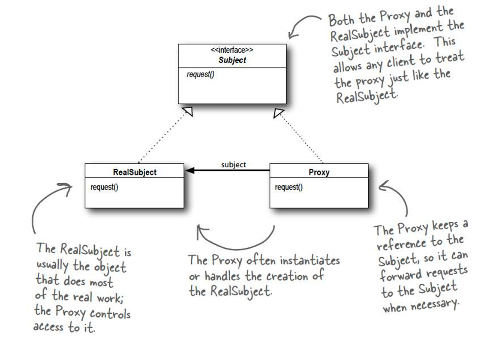
alt text
1 2 3 4 5 6 7 8 9 10 11 12 13 14 15 16 17 18 19 20 21 22 23 24 25 26 27 28 29 30 31 32 33 34 35 36 37 38 39 40 41 42 43 44 45 46 47 48 49 50 51 52 53 54 55 56 57 58 59 60 61 62 63 64 65 66 67 68 69 70 71 72 73 74 75 76 77 78 79 80 81 82 #include <iostream> #include <memory> #include <cstdlib> #include <chrono> #include <string> #include <thread> class Image { public : virtual void Display () 0 ; virtual ~Image () = default ; }; class RealImage : public Image{ public : explicit RealImage (const std::string& filename) : filename(filename) { startTime = std::chrono::high_resolution_clock::now (); LoadFromDisk (); } void Display () override { std::cout << "Displaying " << filename << std::endl; } bool IsLoaded () const { auto currentTime = std::chrono::high_resolution_clock::now (); auto elapsed = std::chrono::duration_cast <std::chrono::seconds>(currentTime - startTime); return elapsed.count () >= 5 ; } private : void LoadFromDisk () { std::cout << "Loading " << filename << " from disk." << std::endl; } std::string filename; std::chrono::high_resolution_clock::time_point startTime; }; class ProxyImage : public Image{ public : explicit ProxyImage (const std::string& filename) : filename(filename), realImage(nullptr) { void Display () override { while (!realImage || !realImage->IsLoaded ()) { if (!realImage) { std::cout << "Real image not loaded yet. Loading now..." << std::endl; realImage = std::make_unique <RealImage>(filename); } else { std::cout << "Image is still loading. Please wait..." << std::endl; } std::this_thread::sleep_for (std::chrono::seconds (1 )); } realImage->Display (); } private : std::string filename; std::unique_ptr<RealImage> realImage; }; int main () ProxyImage image1 ("test_image_1.jpg" ) ; std::cout << "Proxy Image objects created." << std::endl; image1. Display (); return 0 ; }
输出： 1 2 3 4 5 6 7 8 Proxy Image objects created. Real image not loaded yet. Loading now... Loading test_image_1.jpg from disk. Image is still loading. Please wait... Image is still loading. Please wait... Image is still loading. Please wait... Image is still loading. Please wait... Displaying test_image_1.jpg
符合的设计原则：合成复用原则、迪米特法则。
行为型模式
策略模式
Insight：策略模式的核心思想是将算法封装在独立的策略类中，从而使得客户端代码可以在运行时动态地选择和切换不同的算法。这样可以提高系统的灵活性和可扩展性，同时遵循开闭原则。
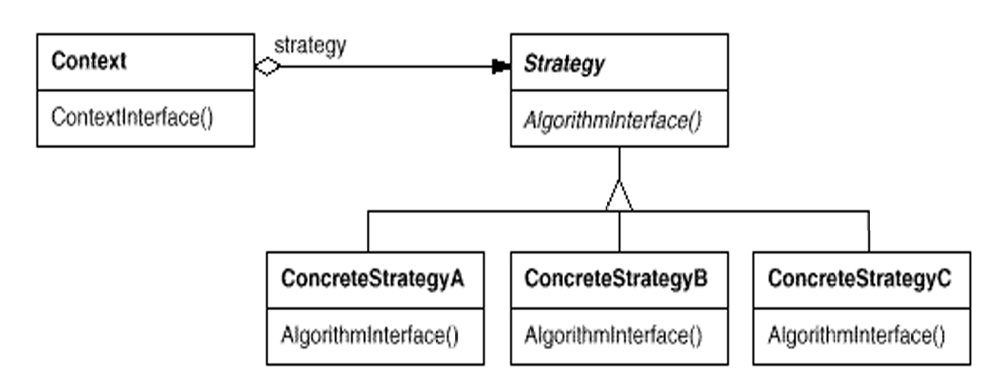
alt text
1 2 3 4 5 6 7 8 9 10 11 12 13 14 15 16 17 18 19 20 21 22 23 24 25 26 27 28 29 30 31 32 33 34 35 36 37 38 39 40 41 42 43 44 45 46 47 48 49 50 51 52 53 54 55 56 57 58 59 60 61 62 63 #include <iostream> #include <memory> class QuackBehavior { public : virtual void quack () 0 ; virtual ~QuackBehavior () = default ; }; class Quack : public QuackBehavior{ public : virtual void quack () override { std::cout << "Quack!" << std::endl; } virtual ~Quack () = default ; }; class Squeak : public QuackBehavior{ public : virtual void quack () override { std::cout << "Squeak!" << std::endl; } virtual ~Squeak () = default ; }; class Duck { public : Duck (std::unique_ptr<QuackBehavior> qb) : quackBehavior (std::move (qb)) {} void performQuack () { quackBehavior->quack (); } void setQuackBehavior (std::unique_ptr<QuackBehavior> qb) { quackBehavior = std::move (qb); } private : std::unique_ptr<QuackBehavior> quackBehavior; }; int main () std::unique_ptr<QuackBehavior> quackBehavior1 = std::make_unique <Quack>(); std::unique_ptr<QuackBehavior> quackBehavior2 = std::make_unique <Squeak>(); Duck duck (std::move(quackBehavior1)) ; duck.performQuack (); duck.setQuackBehavior (std::move (quackBehavior2)); duck.performQuack (); return 0 ; }
输出：
符合的设计原则：开闭原则、依赖倒置原则。
状态模式
Insight：状态模式的核心思想是将对象的状态封装在独立的状态类中，从而使得对象在不同状态下表现出不同的行为。这样可以实现状态之间的切换和管理，同时提高系统的灵活性和可维护性。
类图和策略模式是一样的，但是意义不同。
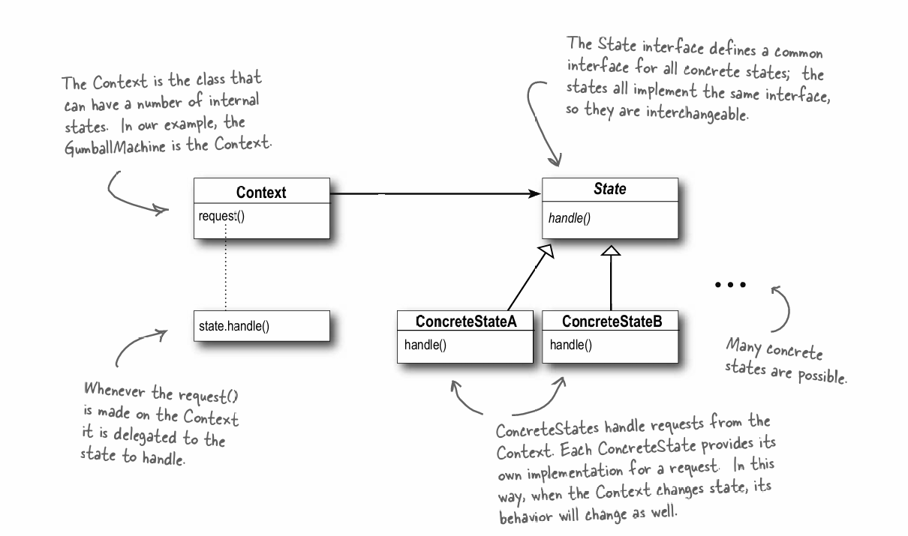
alt text
1 2 3 4 5 6 7 8 9 10 11 12 13 14 15 16 17 18 19 20 21 22 23 24 25 26 27 28 29 30 31 32 33 34 35 36 37 38 39 40 41 42 43 44 45 46 47 48 49 50 51 52 53 54 55 56 57 58 59 60 61 62 63 64 65 66 67 68 69 70 71 72 73 74 75 76 77 78 79 80 81 82 83 84 85 86 87 88 89 90 91 92 93 94 95 96 97 98 99 100 101 102 103 104 105 106 107 108 109 110 111 112 113 114 115 116 117 118 119 120 121 122 123 124 125 126 127 128 129 130 131 132 133 134 135 136 137 138 139 140 141 142 143 144 145 146 147 148 149 150 151 152 153 154 155 156 157 158 159 160 161 162 163 164 165 166 167 168 169 170 171 172 173 174 175 176 177 178 179 180 181 182 183 184 185 186 187 188 189 190 191 192 193 194 195 196 197 198 199 200 201 202 203 204 205 206 207 208 209 210 211 212 213 214 215 216 217 218 219 220 221 222 223 224 225 226 227 228 229 230 231 232 233 234 235 236 237 238 239 240 241 242 243 244 245 246 247 248 249 250 251 252 253 254 255 256 257 258 259 260 261 262 263 #include <iostream> #include <memory> class State { public : virtual void InsertQuarter () 0 ; virtual void EjectQuarter () 0 ; virtual void TurnCrank () 0 ; virtual void DispenseGumball () 0 ; virtual ~State () = default ; }; class GumballMachine ;class NoQuarterState : public State{ public : explicit NoQuarterState (GumballMachine* machine) : machine(machine) { void InsertQuarter () override void EjectQuarter () override void TurnCrank () override void DispenseGumball () override private : GumballMachine* machine; }; class HasQuarterState : public State{ public : explicit HasQuarterState (GumballMachine* machine) : machine(machine) { void InsertQuarter () override void EjectQuarter () override void TurnCrank () override void DispenseGumball () override private : GumballMachine* machine; }; class SoldState : public State{ public : explicit SoldState (GumballMachine* machine) : machine(machine) { void InsertQuarter () override void EjectQuarter () override void TurnCrank () override void DispenseGumball () override private : GumballMachine* machine; }; class SoldOutState : public State{ public : explicit SoldOutState (GumballMachine* machine) : machine(machine) { void InsertQuarter () override void EjectQuarter () override void TurnCrank () override void DispenseGumball () override private : GumballMachine* machine; }; class GumballMachine { public : explicit GumballMachine (int count) : gumballCount(count), noQuarterState(this), hasQuarterState(this), soldState(this), soldOutState(this) { if (gumballCount == 0 ) { currentState = &soldOutState; } else { currentState = &noQuarterState; } } void InsertQuarter () { currentState->InsertQuarter (); } void EjectQuarter () { currentState->EjectQuarter (); } void TurnCrank () { currentState->TurnCrank (); currentState->DispenseGumball (); } void SetState (State* state) { currentState = state; } void ReleaseGumball () { if (gumballCount > 0 ) { --gumballCount; std::cout << "A gumball is released. Remaining gumballs: " << gumballCount << std::endl; } } State* GetNoQuarterState () { return &noQuarterState; } State* GetHasQuarterState () { return &hasQuarterState; } State* GetSoldState () { return &soldState; } State* GetSoldOutState () { return &soldOutState; } int GetGumballCount () const { return gumballCount; } private : NoQuarterState noQuarterState; HasQuarterState hasQuarterState; SoldState soldState; SoldOutState soldOutState; State* currentState; int gumballCount{}; }; void NoQuarterState::InsertQuarter () std::cout << "You inserted a quarter." << std::endl; machine->SetState (machine->GetHasQuarterState ()); } void NoQuarterState::EjectQuarter () std::cout << "You haven't inserted a quarter." << std::endl; } void NoQuarterState::TurnCrank () std::cout << "You turned, but there's no quarter." << std::endl; } void NoQuarterState::DispenseGumball () std::cout << "You need to pay first." << std::endl; } void HasQuarterState::InsertQuarter () std::cout << "You can't insert another quarter." << std::endl; } void HasQuarterState::EjectQuarter () std::cout << "Quarter returned." << std::endl; machine->SetState (machine->GetNoQuarterState ()); } void HasQuarterState::TurnCrank () std::cout << "You turned the crank." << std::endl; machine->SetState (machine->GetSoldState ()); } void HasQuarterState::DispenseGumball () std::cout << "No gumball dispensed." << std::endl; } void SoldState::InsertQuarter () std::cout << "Please wait, we're already giving you a gumball." << std::endl; } void SoldState::EjectQuarter () std::cout << "Sorry, you already turned the crank." << std::endl; } void SoldState::TurnCrank () std::cout << "Turning twice doesn't get you another gumball!" << std::endl; } void SoldState::DispenseGumball () machine->ReleaseGumball (); if (machine->GetGumballCount () > 0 ) { machine->SetState (machine->GetNoQuarterState ()); } else { std::cout << "Oops, out of gumballs!" << std::endl; machine->SetState (machine->GetSoldOutState ()); } } void SoldOutState::InsertQuarter () std::cout << "You can't insert a quarter, the machine is sold out." << std::endl; } void SoldOutState::EjectQuarter () std::cout << "You can't eject, you haven't inserted a quarter yet." << std::endl; } void SoldOutState::TurnCrank () std::cout << "You turned, but there are no gumballs." << std::endl; } void SoldOutState::DispenseGumball () std::cout << "No gumball dispensed." << std::endl; } int main () GumballMachine machine (2 ) ; std::cout << "=== Gumball Machine Simulation ===" << std::endl; std::cout << "=== 1. Insert Quarter, Turn Crank ===" << std::endl; machine.InsertQuarter (); machine.TurnCrank (); std::cout << "=== 2. Insert Quarter, Eject Quarter ===" << std::endl; machine.InsertQuarter (); machine.EjectQuarter (); std::cout << "=== 3. Eject Quarter without Inserting ===" << std::endl; machine.EjectQuarter (); std::cout << "=== 4. Insert Quarter, Turn Crank ===" << std::endl; machine.InsertQuarter (); machine.TurnCrank (); std::cout << "=== 5. Insert Quarter and Turn Crank when Sold Out ===" << std::endl; machine.InsertQuarter (); machine.TurnCrank (); return 0 ; }
输出： 1 2 3 4 5 6 7 8 9 10 11 12 13 14 15 16 17 18 19 === Gumball Machine Simulation === === 1. Insert Quarter, Turn Crank === You inserted a quarter. You turned the crank. A gumball is released. Remaining gumballs: 1 === 2. Insert Quarter, Eject Quarter === You inserted a quarter. Quarter returned. === 3. Eject Quarter without Inserting === You haven't inserted a quarter. === 4. Insert Quarter, Turn Crank === You inserted a quarter. You turned the crank. A gumball is released. Remaining gumballs: 0 Oops, out of gumballs! === 5. Insert Quarter and Turn Crank when Sold Out === You can't insert a quarter, the machine is sold out. You turned, but there are no gumballs. No gumball dispensed.
符合的设计原则：开闭原则、依赖倒置原则。
观察者模式
我最喜欢也最常用的设计模式
Insight：观察者模式的核心思想是通过定义对象之间的一对多依赖关系，使得当一个对象的状态发生变化时，所有依赖于它的对象都会得到通知并自动更新。这样可以实现对象之间的松耦合，提高系统的灵活性和可维护性。
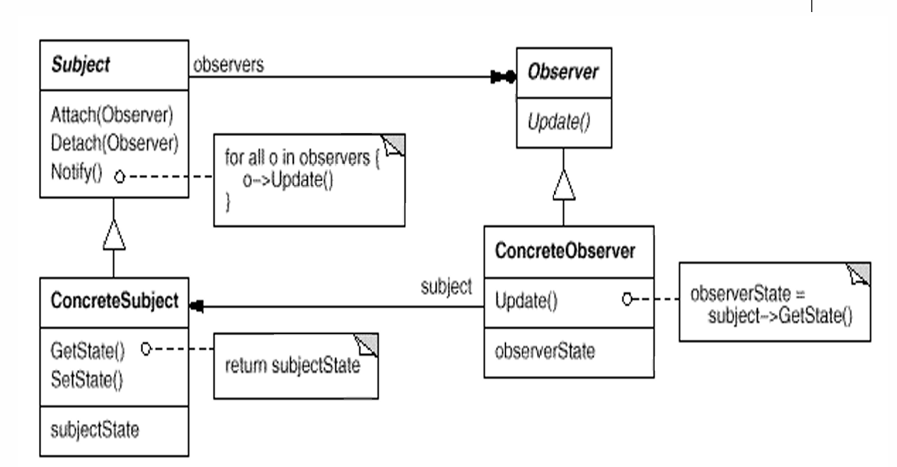
alt text
1 2 3 4 5 6 7 8 9 10 11 12 13 14 15 16 17 18 19 20 21 22 23 24 25 26 27 28 29 30 31 32 33 34 35 36 37 38 39 40 41 42 43 44 45 46 47 48 49 50 51 52 53 54 55 56 57 58 59 60 61 62 63 64 65 66 67 68 69 70 71 72 73 74 75 76 77 78 79 80 81 82 83 84 85 86 87 88 89 90 91 92 93 94 95 96 97 98 99 100 101 102 103 104 105 106 107 108 109 110 111 112 113 114 115 116 117 118 119 120 121 122 123 124 125 126 127 128 129 130 131 #include <iostream> #include <memory> #include <vector> #include <algorithm> #include <limits> class Observer { public : virtual void update (float temperature, float humidity, float pressure) 0 ; virtual ~Observer () = default ; }; class Subject { public : virtual void registerObserver (Observer* o) 0 ; virtual void removeObserver (Observer* o) 0 ; virtual void notifyObservers () 0 ; virtual ~Subject () = default ; }; class WeatherData : public Subject{ public : void registerObserver (Observer* o) override { observers.push_back (o); } void removeObserver (Observer* o) override { auto it = std::find (observers.begin (), observers.end (), o); if (it != observers.end ()) { observers.erase (it); } } void notifyObservers () override { for (Observer* o: observers) { o->update (temperature, humidity, pressure); } } void SetMeasurements (float temp, float hum, float pres) { temperature = temp; humidity = hum; pressure = pres; notifyObservers (); } private : std::vector<Observer*> observers; float temperature{}; float humidity{}; float pressure{}; }; class CurrentConditionsDisplay : public Observer{ public : CurrentConditionsDisplay (WeatherData* wd) : weatherData (wd) {} void update (float temperature, float humidity, float pressure) override { this ->temperature = temperature; this ->humidity = humidity; display (); } void display () { std::cout << "Current conditions: " << temperature << "F degrees and " << humidity << "% humidity" << std::endl; } private : WeatherData* weatherData; float temperature{}; float humidity{}; }; class StatisticsDisplay : public Observer{ public : StatisticsDisplay (WeatherData* wd) : weatherData (wd) {} void update (float temperature, float humidity, float pressure) override { tempSum += temperature; numReadings++; if (temperature > maxTemp) { maxTemp = temperature; } if (temperature < minTemp) { minTemp = temperature; } display (); } void display () { std::cout << "Statistics Display: " ; std::cout << "Avg/Max/Min temperature = " << (tempSum / numReadings) << "/" << maxTemp << "/" << minTemp << std::endl; } private : WeatherData* weatherData; float tempSum{}; int numReadings{}; float maxTemp{-std::numeric_limits<float >::infinity ()}; float minTemp{std::numeric_limits<float >::infinity ()}; }; int main () WeatherData weatherData; CurrentConditionsDisplay currentDisplay (&weatherData) ; StatisticsDisplay statisticsDisplay (&weatherData) ; weatherData.registerObserver (¤tDisplay); weatherData.registerObserver (&statisticsDisplay); weatherData.SetMeasurements (80 , 65 , 30.4f ); weatherData.SetMeasurements (82 , 70 , 29.2f ); weatherData.SetMeasurements (78 , 90 , 29.2f ); return 0 ; }
输出： 1 2 3 4 5 6 Current conditions: 80F degrees and 65% humidity Statistics Display: Avg/Max/Min temperature = 80/80/80 Current conditions: 82F degrees and 70% humidity Statistics Display: Avg/Max/Min temperature = 81/82/80 Current conditions: 78F degrees and 90% humidity Statistics Display: Avg/Max/Min temperature = 80/82/78
符合的设计原则：单一职责原则、依赖倒置原则。
迭代器模式
Insight：迭代器模式的核心思想是通过提供一种统一的方式来访问集合对象中的元素，而不暴露集合对象的内部结构。这样可以实现对不同类型集合的遍历操作，同时提高代码的可复用性和可维护性。
AP对这个应该非常熟悉。
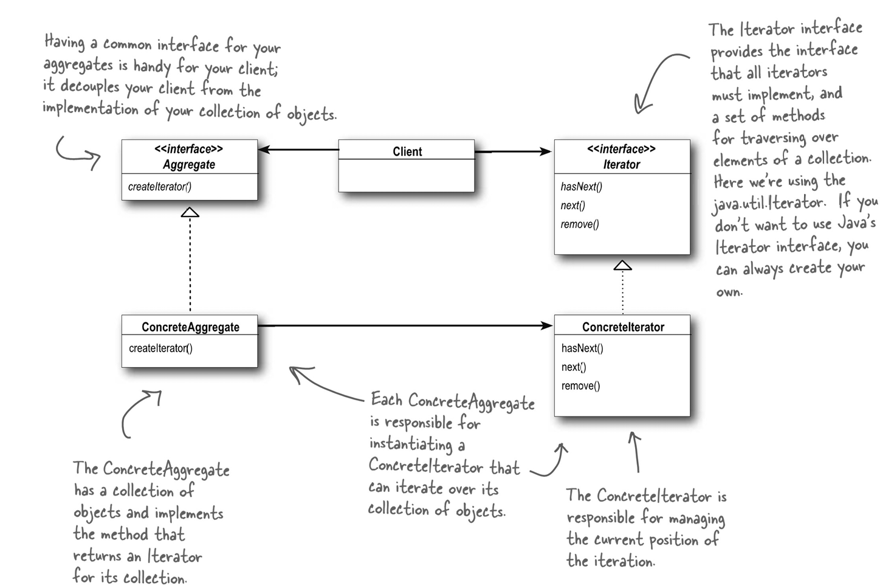
alt text
1 2 3 4 5 6 7 8 9 10 11 12 13 14 15 16 17 18 19 20 21 22 23 24 25 26 27 28 29 30 31 32 33 34 35 36 37 38 39 40 41 42 43 44 45 46 47 48 49 50 51 52 53 54 55 56 57 58 59 60 61 62 63 64 65 66 67 68 69 70 71 72 73 74 75 76 77 78 79 80 81 82 83 84 85 86 87 88 89 90 91 92 93 94 95 96 97 98 99 100 101 102 103 104 105 106 107 108 109 110 111 112 113 114 115 116 117 118 119 120 121 122 123 124 125 126 127 128 129 130 131 132 133 134 135 136 137 138 139 140 141 142 143 144 145 146 147 148 149 150 151 152 153 154 155 156 157 158 159 160 161 162 163 164 165 166 167 168 169 170 171 172 173 174 175 176 177 178 179 180 181 182 183 184 185 186 187 #include <iostream> #include <memory> #include <string> #include <vector> #include <unordered_map> class MenuItem { public : MenuItem () = default ; MenuItem (const std::string& name, const std::string& description, double price, bool vegetarian) : name (name), description (description), price (price), vegetarian (vegetarian) {} std::string GetName () const { return name; } std::string GetDescription () const { return description; } double GetPrice () const { return price; } bool IsVegetarian () const { return vegetarian; } protected : std::string name; std::string description; double price; bool vegetarian; }; class Iterator { public : virtual bool HasNext () 0 ; virtual MenuItem* Next () 0 ; virtual ~Iterator () = default ; }; class Menu { public : virtual Iterator* CreateIterator () 0 ; virtual ~Menu () = default ; }; class PancakeHouseMenu : public Menu{ friend class PancakeHouseMenuIterator ; public : PancakeHouseMenu () { menuItems.emplace_back ("Pancake Breakfast" , "Pancakes with scrambled eggs, and toast" , 2.99 , false ); menuItems.emplace_back ("Regular Pancake" , "Pancakes with fried eggs, sausage" , 2.99 , false ); menuItems.emplace_back ("Blueberry Pancake" , "Pancakes made with fresh blueberries" , 3.49 , true ); menuItems.emplace_back ("Waffles" , "Waffles with your choice of blueberries or strawberries" , 3.59 , true ); } Iterator* CreateIterator () override ; const std::vector<MenuItem>& GetMenuItems () const { return menuItems; } private : std::vector<MenuItem> menuItems; }; class DinerMenu : public Menu{ friend class DinerMenuIterator ; public : DinerMenu () { menuItems[0 ] = MenuItem ("Vegetarian BLT" , "(Fakin') Bacon with lettuce & tomato on whole wheat" , 2.99 , true ); menuItems[1 ] = MenuItem ("BLT" , "Bacon with lettuce & tomato on whole wheat" , 2.99 , false ); menuItems[2 ] = MenuItem ("Soup of the day" , "Soup of the day, with a side of potato salad" , 3.29 , false ); menuItems[3 ] = MenuItem ("Hotdog" , "A hot dog, with sauerkraut, relish, onions, topped with cheese" , 3.05 , false ); } Iterator* CreateIterator () override ; const MenuItem* GetMenuItem (int index) const { auto it = menuItems.find (index); if (it != menuItems.end ()) { return &(it->second); } return nullptr ; } int GetMenuSize () const { return static_cast <int >(menuItems.size ()); } private : std::unordered_map<int , MenuItem> menuItems; }; class PancakeHouseMenuIterator : public Iterator{ public : explicit PancakeHouseMenuIterator (std::vector<MenuItem>& items) : items(items) { bool HasNext () override { return position < items.size (); } MenuItem* Next () override { if (!HasNext ()) { return nullptr ; } return &(items[position++]); } protected : int position{0 }; std::vector<MenuItem>& items; }; class DinerMenuIterator : public Iterator{ public : explicit DinerMenuIterator (std::unordered_map<int , MenuItem>& items) : items(items) { bool HasNext () override { return position < static_cast <int >(items.size ()); } MenuItem* Next () override { if (!HasNext ()) { return nullptr ; } return &(items[position++]); } protected : int position{0 }; std::unordered_map<int , MenuItem>& items; }; Iterator* PancakeHouseMenu::CreateIterator () return new PancakeHouseMenuIterator (menuItems); } Iterator* DinerMenu::CreateIterator () return new DinerMenuIterator (menuItems); } int main () PancakeHouseMenu pancakeHouseMenu; DinerMenu dinerMenu; Iterator* pancakeIterator = pancakeHouseMenu.CreateIterator (); Iterator* dinerIterator = dinerMenu.CreateIterator (); std::cout << "MENU\n----\nBREAKFAST" << std::endl; while (pancakeIterator->HasNext ()) { MenuItem* item = pancakeIterator->Next (); std::cout << item->GetName () << ", " << item->GetPrice () << " -- " << item->GetDescription () << std::endl; } std::cout << "\nLUNCH" << std::endl; while (dinerIterator->HasNext ()) { MenuItem* item = dinerIterator->Next (); std::cout << item->GetName () << ", " << item->GetPrice () << " -- " << item->GetDescription () << std::endl; } delete pancakeIterator; delete dinerIterator; return 0 ; }
输出： 1 2 3 4 5 6 7 8 9 10 11 12 13 MENU ---- BREAKFAST Pancake Breakfast, 2.99 -- Pancakes with scrambled eggs, and toast Regular Pancake, 2.99 -- Pancakes with fried eggs, sausage Blueberry Pancake, 3.49 -- Pancakes made with fresh blueberries Waffles, 3.59 -- Waffles with your choice of blueberries or strawberries LUNCH Vegetarian BLT, 2.99 -- (Fakin') Bacon with lettuce & tomato on whole wheat BLT, 2.99 -- Bacon with lettuce & tomato on whole wheat Soup of the day, 3.29 -- Soup of the day, with a side of potato salad Hotdog, 3.05 -- A hot dog, with sauerkraut, relish, onions, topped with cheese
还有更复杂的复合迭代器，见组合模式中的实现。
符合的设计原则：单一职责原则、开闭原则。
模板方法模式
Insight：模板模式的核心思想是通过定义一个算法的骨架，并将某些步骤延迟到子类中实现，从而使得子类可以在不改变算法结构的情况下重新定义算法的某些特定步骤。这样可以提高代码的复用性和可维护性。
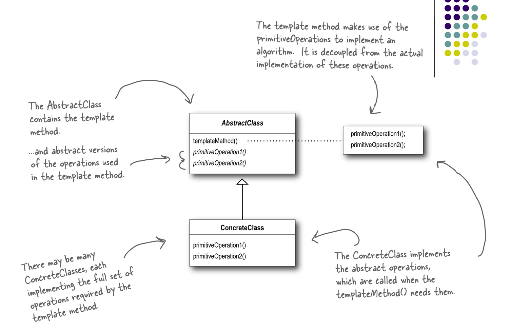
alt text
1 2 3 4 5 6 7 8 9 10 11 12 13 14 15 16 17 18 19 20 21 22 23 24 25 26 27 28 29 30 31 32 33 34 35 36 37 38 39 40 41 42 43 44 45 46 47 48 49 50 51 52 53 54 55 56 57 58 59 60 61 62 63 64 65 66 67 68 69 70 #include <iostream> #include <memory> class CaffeineBeverage { public : void prepareRecipe () { boilWater (); brew (); pourInCup (); addCondiments (); } virtual ~CaffeineBeverage () = default ; protected : virtual void brew () 0 ; virtual void addCondiments () 0 ; void boilWater () { std::cout << "Boiling water" << std::endl; } void pourInCup () { std::cout << "Pouring into cup" << std::endl; } }; class Coffee : public CaffeineBeverage{ protected : void brew () override { std::cout << "Dripping Coffee through filter" << std::endl; } void addCondiments () override { std::cout << "Adding Sugar and Milk" << std::endl; } }; class Tea : public CaffeineBeverage{ protected : void brew () override { std::cout << "Steeping the tea" << std::endl; } void addCondiments () override { std::cout << "Adding Lemon" << std::endl; } }; int main () std::unique_ptr<CaffeineBeverage> coffee = std::make_unique <Coffee>(); std::cout << "Making Coffee:" << std::endl; coffee->prepareRecipe (); std::cout << std::endl; std::unique_ptr<CaffeineBeverage> tea = std::make_unique <Tea>(); std::cout << "Making Tea:" << std::endl; tea->prepareRecipe (); return 0 ; }
输出： 1 2 3 4 5 6 7 8 9 10 11 Making Coffee: Boiling water Dripping Coffee through filter Pouring into cup Adding Sugar and Milk Making Tea: Boiling water Steeping the tea Pouring into cup Adding Lemon
符合的设计原则：单一职责原则、开闭原则。
命令模式
Insight：命令模式的核心思想是将请求封装为一个对象，从而使得可以将请求参数化、队列化以及支持撤销操作。这样可以实现请求的解耦，提高系统的灵活性和可扩展性。
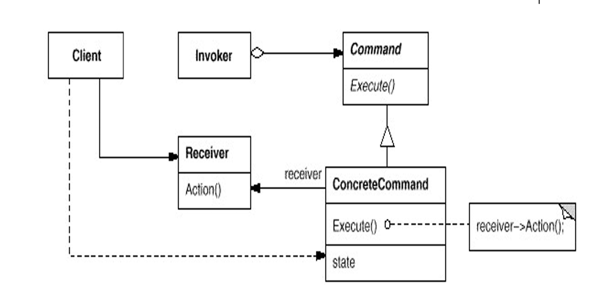
alt text
1 2 3 4 5 6 7 8 9 10 11 12 13 14 15 16 17 18 19 20 21 22 23 24 25 26 27 28 29 30 31 32 33 34 35 36 37 38 39 40 41 42 43 44 45 46 47 48 49 50 51 52 53 54 55 56 57 58 59 60 61 62 63 64 65 66 67 68 69 70 71 72 73 74 75 76 77 78 79 80 81 82 83 84 85 86 87 88 89 90 91 92 93 94 95 96 97 98 99 100 101 102 103 104 105 106 107 108 109 110 111 112 113 114 115 116 117 118 119 120 121 122 123 124 125 126 127 128 129 130 131 132 133 134 135 136 137 138 139 140 141 142 143 144 145 146 147 148 149 150 151 152 153 154 155 156 157 158 159 160 161 162 163 164 165 166 167 168 169 170 171 172 173 174 175 176 177 178 179 180 181 182 183 184 185 186 187 188 189 190 191 192 193 194 195 196 197 198 199 200 201 202 203 204 205 206 207 208 209 210 211 212 213 214 215 216 217 218 219 220 221 222 223 224 225 226 227 228 229 230 231 232 233 234 235 236 237 238 239 240 241 242 243 244 245 246 247 248 249 250 251 252 253 254 255 256 257 258 259 260 261 262 263 264 265 266 267 268 269 270 271 272 273 274 275 276 277 278 279 280 281 282 283 284 285 286 287 288 289 290 291 292 293 294 295 296 297 298 299 300 301 302 303 304 305 306 307 308 309 #include <iostream> #include <memory> #include <vector> class Command { public : virtual void execute () 0 ; virtual void undo () 0 ; virtual ~Command () = default ; }; class MacroCommand : public Command{ public : explicit MacroCommand (const std::vector<Command*>& commands) : commands(commands) { void execute () override { for (auto & cmd : commands) { cmd->execute (); } } void undo () override { for (auto it = commands.rbegin (); it != commands.rend (); ++it) { (*it)->undo (); } } private : std::vector<Command*> commands; }; class Light { public : void on () { std::cout << "Light is ON" << std::endl; } void off () { std::cout << "Light is OFF" << std::endl; } }; class LightOnCommand : public Command{ public : explicit LightOnCommand (Light* light) : light(light) { void execute () override { light->on (); } void undo () override { light->off (); } private : Light* light; }; class LightOffCommand : public Command{ public : explicit LightOffCommand (Light* light) : light(light) { void execute () override { light->off (); } void undo () override { light->on (); } private : Light* light; }; enum Speed { OFF, LOW, MEDIUM, HIGH };class CeilingFan { public : void high () { speed = HIGH; std::cout << "Ceiling Fan is on HIGH" << std::endl; } void medium () { speed = MEDIUM; std::cout << "Ceiling Fan is on MEDIUM" << std::endl; } void low () { speed = LOW; std::cout << "Ceiling Fan is on LOW" << std::endl; } void off () { speed = OFF; std::cout << "Ceiling Fan is OFF" << std::endl; } Speed getSpeed () const { return speed; } private : Speed speed = OFF; }; class CeilingFanHighCommand : public Command{ public : explicit CeilingFanHighCommand (CeilingFan* fan) : fan(fan), prevSpeed(OFF) { void execute () override { prevSpeed = fan->getSpeed (); fan->high (); } void undo () override { switch (prevSpeed) { case HIGH: fan->high (); break ; case MEDIUM: fan->medium (); break ; case LOW: fan->low (); break ; case OFF: fan->off (); break ; } } private : CeilingFan* fan; Speed prevSpeed; }; class CeilingFanMediumCommand : public Command{ public : explicit CeilingFanMediumCommand (CeilingFan* fan) : fan(fan), prevSpeed(OFF) { void execute () override { prevSpeed = fan->getSpeed (); fan->medium (); } void undo () override { switch (prevSpeed) { case HIGH: fan->high (); break ; case MEDIUM: fan->medium (); break ; case LOW: fan->low (); break ; case OFF: fan->off (); break ; } } private : CeilingFan* fan; Speed prevSpeed; }; class CeilingFanOffCommand : public Command{ public : explicit CeilingFanOffCommand (CeilingFan* fan) : fan(fan), prevSpeed(OFF) { void execute () override { prevSpeed = fan->getSpeed (); fan->off (); } void undo () override { switch (prevSpeed) { case HIGH: fan->high (); break ; case MEDIUM: fan->medium (); break ; case LOW: fan->low (); break ; case OFF: fan->off (); break ; } } private : CeilingFan* fan; Speed prevSpeed; }; class RemoteControl { public : void setCommand (int slot, Command* command) { if (slot == 1 ) { slot1Command = command; } else if (slot == 2 ) { slot2Command = command; } } void pressButton (int slot) { if (slot == 1 && slot1Command) { slot1Command->execute (); lastCommand = slot1Command; } else if (slot == 2 && slot2Command) { slot2Command->execute (); lastCommand = slot2Command; } } void pressUndo () { if (lastCommand) { lastCommand->undo (); } } void pressRedo () { if (lastCommand) { lastCommand->execute (); } } private : Command* slot1Command = nullptr ; Command* slot2Command = nullptr ; Command* lastCommand = nullptr ; }; int main () RemoteControl remote; Light livingRoomLight; LightOnCommand lightOnCmd (&livingRoomLight) ; LightOffCommand lightOffCmd (&livingRoomLight) ; CeilingFan ceilingFan; CeilingFanHighCommand fanHighCmd (&ceilingFan) ; CeilingFanMediumCommand fanMediumCmd (&ceilingFan) ; CeilingFanOffCommand fanOffCmd (&ceilingFan) ; remote.setCommand (1 , &lightOnCmd); remote.setCommand (2 , &fanHighCmd); remote.pressButton (1 ); remote.pressUndo (); remote.pressButton (2 ); remote.setCommand (1 , &fanMediumCmd); remote.pressButton (1 ); remote.pressUndo (); remote.setCommand (1 , &fanOffCmd); remote.pressButton (1 ); remote.pressUndo (); remote.pressRedo (); std::cout << "\n--- Testing Macro Command ---\n" << std::endl; std::vector<Command*> partyOnCommands = { &lightOnCmd, &fanHighCmd }; MacroCommand partyOnMacro (partyOnCommands) ; remote.setCommand (1 , &partyOnMacro); remote.pressButton (1 ); remote.pressUndo (); return 0 ; }
输出： 1 2 3 4 5 6 7 8 9 10 11 12 13 14 15 Light is ON Light is OFF Ceiling Fan is on HIGH Ceiling Fan is on MEDIUM Ceiling Fan is on HIGH Ceiling Fan is OFF Ceiling Fan is on HIGH Ceiling Fan is OFF --- Testing Macro Command --- Light is ON Ceiling Fan is on HIGH Ceiling Fan is OFF Light is OFF
符合的设计原则：依赖倒置原则、单一职责原则。